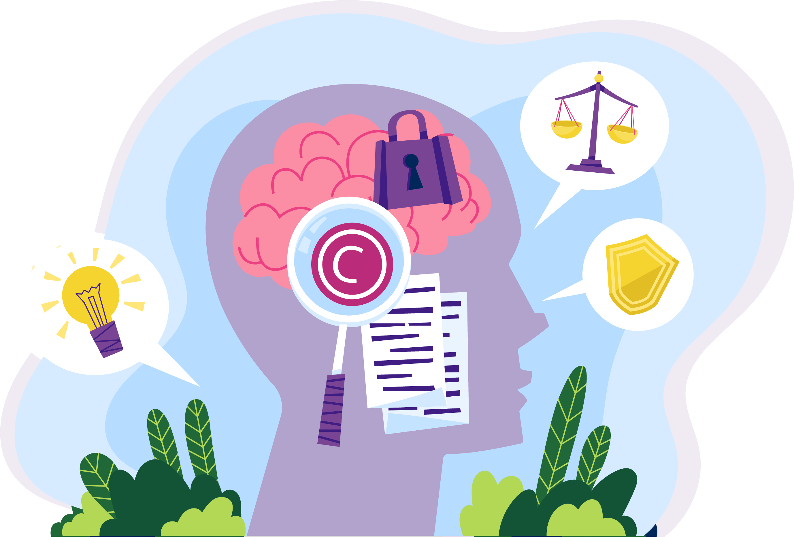
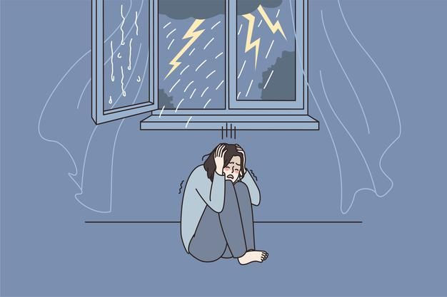
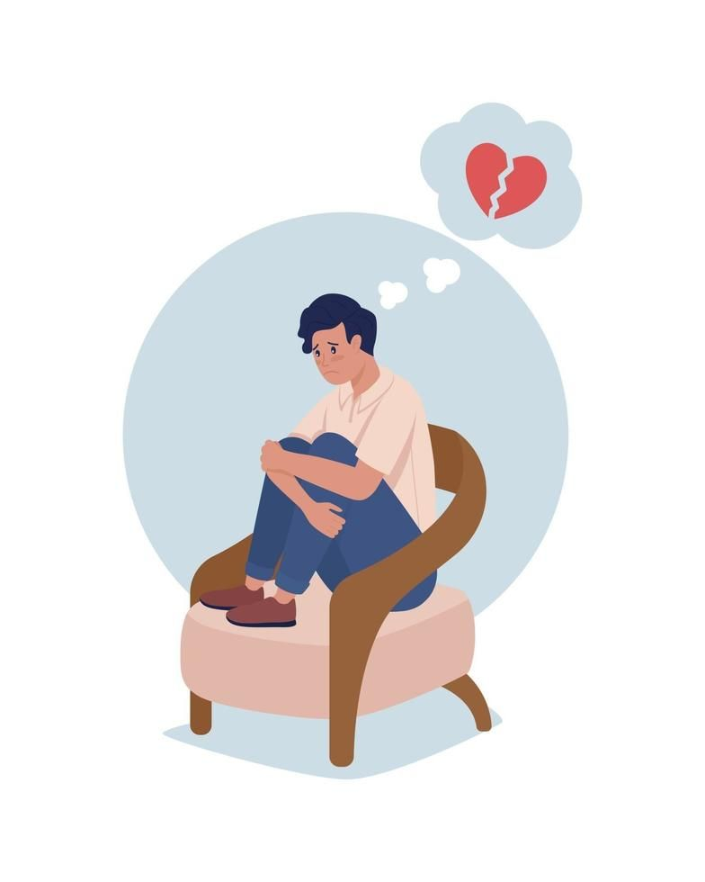
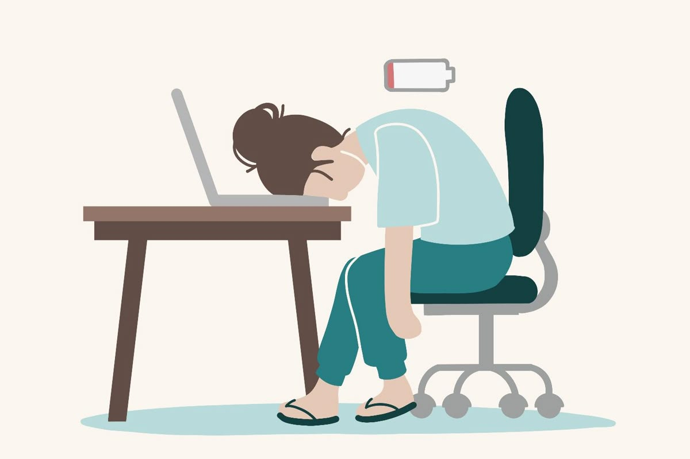
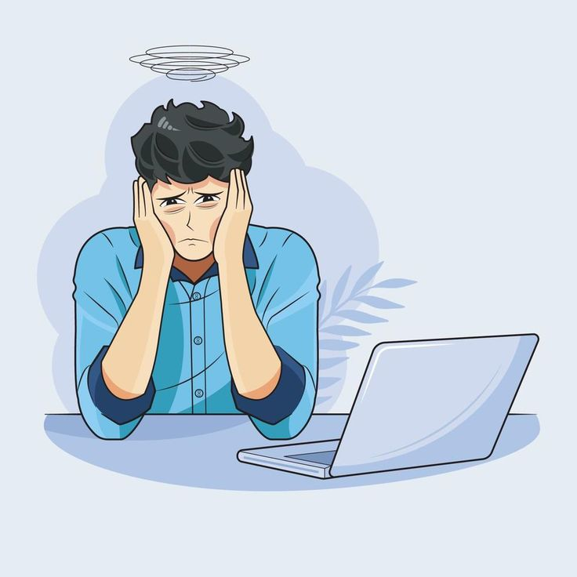
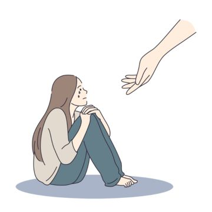
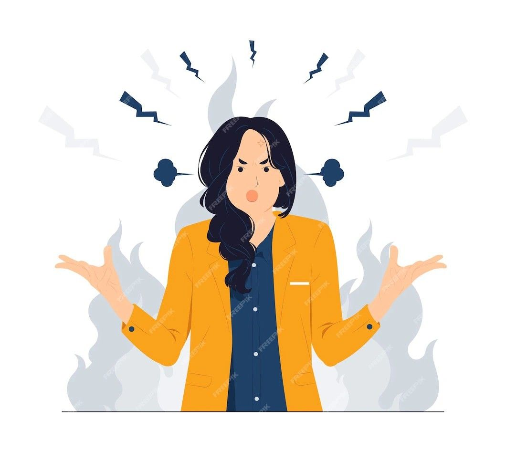

خطوات صغيرة... تصنع فرقًا كبيرًا في يومك
في أوقات كثيرة بنحتاج صوت يرشدنا، وكلمة تطمّن قلوبنا
بهالصفحة جمعنا أهم الإرشادات النفسية اللي بتساعدك تتعامل مع نفسك ومع الحياة بلطف

نصائح وأساليب تساعدك في التعامل مع المشاعر والتحديات النفسية

تعرف على طرق بسيطة تساعدك تواجه خوفك بخطوات عملية، وتستعيد إحساسك بالأمان والسيطرة على الموقف
خذي "وقت استراحة" عندما تشعرين بالخوف، وابتعدي قليلاً عن الموقف لتصفّي ذهنك.
مارسي تمارين التنفّس البطيء أو التهدئة الجسدية لتقليل الاستجابة الفورية للخوف.
واجهي خوفك تدريجياً، ببطء، بدءاً بموقف أقلّ تهديداً ثم تصاعداً منه.
تحدّي الأفكار المزعجة أو المبالغ فيها حول الخوف واستبدليها بأفكار أكثر واقعية.
اهتمي بنفسك جسمياً — نوم منتظم، تغذية جيدة، حركة — لأن الصحة الجسدية تؤثر على شعورك بالخوف.

استراتيجيات للتعامل مع مشاعر الفقد والضغط النفسي
اعترفي بخسارتك أو ما تمرّين به، ولا تكبّتي مشاعرك في داخلِك.
أتى دورك لتقبّل أن الحزن والتغيّر هما جزء من الحياة، وليس خطأً كبيراً أن تشعري بهما.
تواصلي مع أشخاص تثقين بهم، أو انضمي لمجموعة دعم تشعرين فيها بأنك لست وحدك.
اهتمي بروتينك الجسدي والنفسي — النشاط، التغذية،النوم — لأنها تساهم في تقوية قدرتك على الصبر والتحمّل.
امنحي نفسك الوقت الكافي للشفاء، ولا تتوقّعي "أن تنتهي الأمور" بسرعة كبيرة؛ الشفاء عملية.

تجاوز مشاعر العجز واستعادة القدرة على الفعل
ابدئي بخطوة صغيرة يمكنك القيام بها الآن — لا يجب أن تكون مثالية، المهم البدء.
حددِي ما تستطيعين تغييره ما بين ما يمكنك وما ليس بيدك، وركّزي طاقتك على ما تحت سيطرتك.
استخدمي "الحديث الداخلي" الإيجابي: بدل ما تقولين "ما بقدر"، جربي "رح أحاول"، "حتى خطوة صغيرة لها قيمة".
احتفلي بأي إنجاز، مهما كان صغيراً — لأن التقدّم البطيء أفضل من السكون.
طوّري عقليتك بأن التعلّم من الخطأ والجهد أهم من أن "تفشلي" — واعتبري كل تجربة فرصة.

استراتيجيات لاستعادة الأمل والطاقة الإيجابية
كتابة الامتنان: سجّلي يوميًا سهولة ثلاث أمور أنتِ ممتنة لها. هذا التمرين يُظهر الجوانب الإيجابية في حياتك ويقلّل من الشعور باليأس.
تحديد أهداف صغيرة: حاولي وضع أهداف واقعية ومكّونة من "خطوات" — ماشي كبير، حتى خطوة صغيرة تساهم في شعور الأمل والإنجاز.
استثمري في نقاط قوتك: فكّري بماذا أنتِ جيدة أو ما تحبينه في نفسك، وركّزي عليه. استخدام نقاط قوتك يُعزّز من قوتك النفسية.
استخدمي الفكاهة: الضحك أو حتى التفكير في موقف فكاهي يمكن يساعد بإعادة النظر للأمور من منظور أخفّ ويخفّف من ثقل المشاعر السلبية.

طرق للتعامل مع مشاعر الوحدة والعزلة
القبول الذاتي: اعترفي بمشاعرك من الوحدة بدون لوم نفسك، لأن قبول ما تشعرين به يُعد خطوة أولى للتعامل معه.
ممارسة الوعي الذهني (Mindfulness): الوعي يساعدك تكوني حاضِرة في اللحظة وتقبّلي مشاعرك دون حكم.
استخدمي التعاطف مع النفس (Self-Compassion): عاملِي نفسك بنفس الحنان الذي تعبرين به لصديقة في موقف صعب، مثلاً اجلسي مع نفسك بلطف، فكّري بما تحتاجين وتذكّري أنك تستحقين الرأفة.
ابني شبكة تواصل: تواصلي مع أشخاص تثقين بهم — العائلة، الأصدقاء، أو حتى مجموعات دعم — فالتواصل البشري مهم جدًا لتخفيف الوحدة.
انخرطي في نشاط تطوعي: التطوع لا يساعد فقط الآخرين، بل يعزّز من إحساسك بقيمة الذات وينمي علاقات جديدة.

أساليب للسيطرة على الغضب والانفعالات الشديدة
خذي استراحة عندما تغضبين: كما تقول نصائح الطب النفسي، أحيانًا أبسط شيء هو الانسحاب مؤقتًا من الموقف لتفادي انفجار الغضب.
عبّري عن احتياجاتك بوضوح: عندما تهدئين، حدّدي ما الذي أزعجك وعبّري عنه بطريقة بسيطة لكن واضحة، بلا لوم مفرط.
راقبي أفكارك لحظة الغضب: فكّري "لماذا هذا الموقف أثار غضباً كبيراً؟" وحاولي إعادة تقييم ما إذا كانت توقعاتك واقعية.
مارسي التنفّس العميق: عندما تشعرين أن غضبك يتصاعد، تنفّسي ببطء وعمق مرات عدة حتى تهدئين.
استخدمي "الإلهاء البناء": إذا كان الغضب شديد جدًا، قد يكون من المفيد مؤقتًا الانخراط بشيء آخر (مثل تغيير المكان، سماع موسيقى هادئة، الخ) لأن بعض الأبحاث تقول إن تغيير البيئة يساعد على تهدئة الانفعالات.